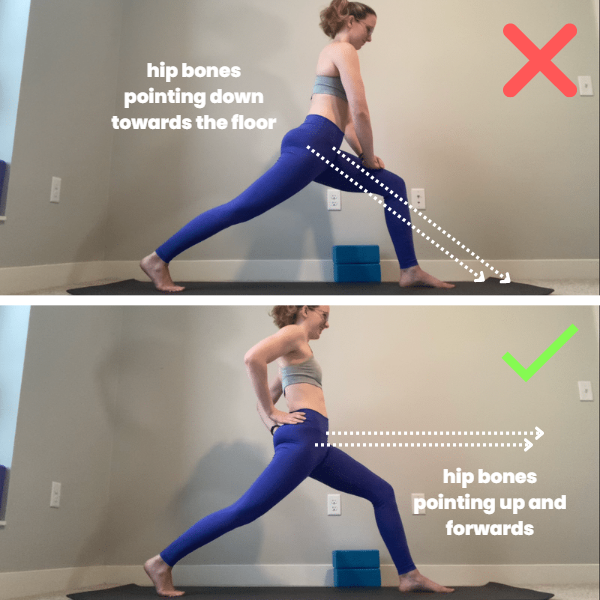
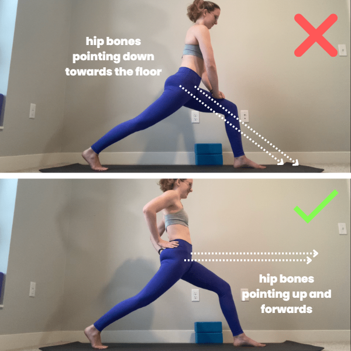
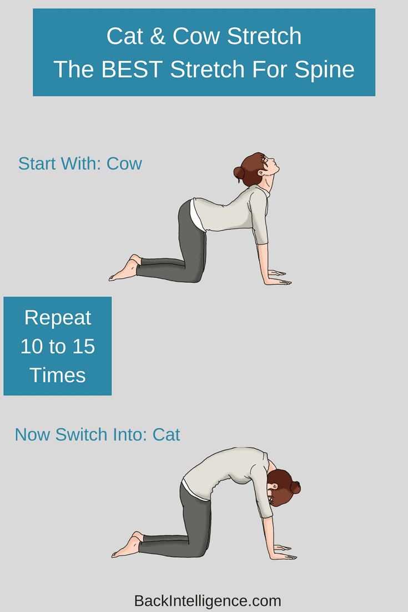
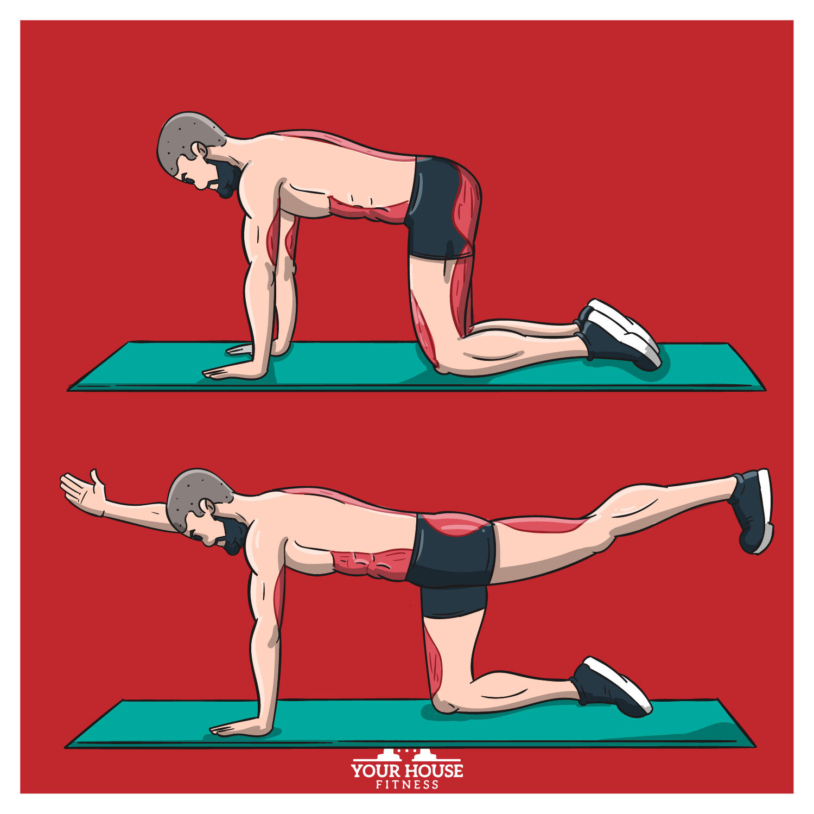
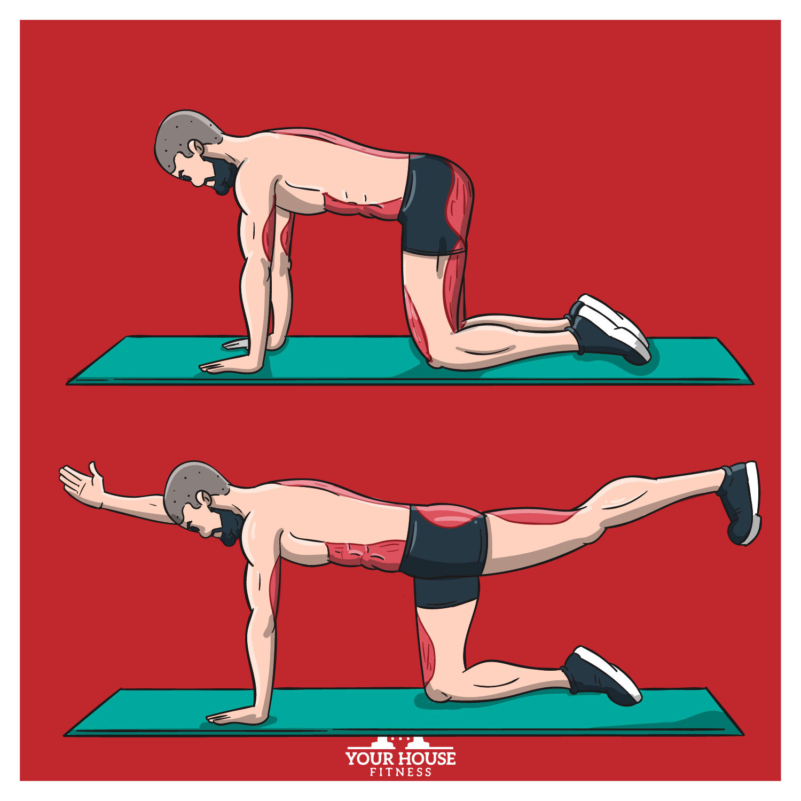

🏋️ CORE & LOWER BACK STRENGTH PROGRAM
Profile: Age 52 | 5'5" | 92 kg | Runner + Gym Enthusiast
📋 PROGRAM OVERVIEW
This program is specifically designed to:
- Strengthen core and lower back muscles
- Reduce desk-related stiffness and pain
- Support running performance and injury prevention
- Improve posture and spinal stability
- Build functional strength for daily activities
Key Principles:
- Progressive overload (gradual increases)
- Quality over quantity
- Listen to your body
- Consistency is key
⏰ DAILY DESK RESET (5-8 MINUTES)
Frequency: 2-3x per workday
Purpose: Combat sitting-related tightness and maintain spinal health throughout the day
Exercise 1: Seated Pelvic Tilts
Sets: 1 | Reps: 10
How to Perform:
- Sit upright in your chair, feet flat on floor
- Place hands on hips to feel movement
- Tilt pelvis forward (arch lower back) - inhale
- Tilt pelvis backward (round lower back) - exhale
- Move slowly and deliberately through full range
Key Points:
- Movement should be isolated to pelvis/lower spine
- No shoulder movement
- Focus on controlled, smooth transitions
- Should feel gentle stretch in lower back
Exercise 2: Hip Flexor Stretch
Duration: 30 seconds per side
How to Perform:
- Stand next to desk for balance
- Step one foot back into a lunge position
- Keep back knee straight or slightly bent
- Tuck pelvis under (posterior pelvic tilt)
- Feel stretch in front of back hip
- Hold steady, breathe deeply
Key Points:
- Don't arch lower back
- Keep core engaged
- Front knee should not pass toes
- You should feel stretch, not pain
Modifications:
- Use chair for support if balance is difficult
- Can be done kneeling if space allows
 

Exercise 3: Upper-Back Extension
Sets: 1 | Reps: 8-10
How to Perform:
- Sit at edge of chair, feet flat
- Interlace fingers behind head
- Gently arch upper back, lifting chest toward ceiling
- Return to neutral
- Focus movement between shoulder blades
Key Points:
- Don't pull on neck
- Move from thoracic spine (mid-back)
- Keep lower back relatively stable
- Exhale as you extend, inhale as you return
💪 CORE WORKOUT (15 MINUTES)
Frequency: 4-5x per week
Purpose: Build deep core stability and endurance
🔥 WARM-UP (2 MINUTES)
Purpose: Prepare your spine, activate your core, and reduce injury risk
1. Cat-Cow Stretches (10 reps)
Setup:
- Start on hands and knees (tabletop position)
- Hands under shoulders, knees under hips
- Spine neutral, neck aligned
Movement:
- Cow (Inhale): Drop belly, lift chest and tailbone, look up gently
- Cat (Exhale): Round spine, tuck chin to chest, tuck tailbone
- Flow smoothly between positions
- Each breath = 1 rep (Cow + Cat)
Focus: Spinal mobility, breathing rhythm
2. Standing Torso Rotations (10 reps)
Setup:
- Stand with feet hip-width apart
- Knees slightly bent (soft knees)
- Hands on hips or crossed at chest
- Core engaged, shoulders relaxed
Movement:
- Keep hips facing forward (locked)
- Rotate torso to the right, then left
- GENTLE - no forcing or bouncing
- Head follows torso naturally
- Left + Right = 1 rep
Focus: Thoracic spine rotation, warm up obliques
⚠️ Avoid: Rotating from hips, twisting too far, speed
3. Standing Knee Raises (5 per side)
Setup:
- Stand tall, feet together
- Hands on hips or hold wall for balance
- Core engaged
Movement:
- Lift right knee toward chest (hip flexion)
- Hold for 1 second at top
- Lower with control
- Repeat 5 times, then switch to left
- Keep standing leg slightly bent
- Maintain upright posture (don't lean back)
Focus: Hip flexor activation, balance, core stability
Why? Prepares hip flexors for core work, activates stabilizers
🎯 Warm-up Goals:
- Increase blood flow to core muscles
- Mobilize spine (Cat-Cow)
- Activate obliques (Rotations)
- Wake up hip flexors (Knee Raises)
- Prepare nervous system for workout
Time: ~2 minutes total. Don't rush - quality over speed!
💪 MAIN EXERCISES
Exercise 1: Dead Bug
Sets: 3 | Reps: 6-8 per side
How to Perform:
- Lie on back, arms extended toward ceiling
- Lift knees to 90-degree position (tabletop)
- Press lower back into floor (engage core)
- Slowly extend right arm overhead and left leg straight
- Return to start
- Alternate sides
Key Points:
- Lower back must stay pressed to floor
- Move slowly (3-4 seconds per rep)
- Exhale as limbs extend
- Stop if lower back arches off floor
Progressions:
- Beginner: Extend only arms OR legs, not both
- Advanced: Add light dumbbell in hands

Exercise 2: Glute Bridge
Sets: 3 | Reps: 10
How to Perform:
- Lie on back, knees bent, feet flat hip-width apart
- Feet should be close enough to graze heels with fingertips
- Press through heels, lift hips toward ceiling
- Squeeze glutes at top, hold 2 seconds
- Lower with control
Key Points:
- Drive through heels, not toes
- Avoid overarching lower back at top
- Shoulders stay on ground
- Feel work in glutes and hamstrings
Progressions:
- Add 2-second pause at top
- Single-leg variation (advanced)
- Add resistance band above knees
Exercise 3: Side Plank (Knee Variation)
Sets: 3 | Duration: 20-30 seconds per side
How to Perform:
- Lie on side, prop up on elbow (elbow under shoulder)
- Stack knees and feet
- Lift hips off ground, creating straight line from head to knees
- Keep top arm on hip or extended up
- Hold position, breathe steadily
Key Points:
- Don't let hips sag
- Keep shoulder pulled away from ear
- Body should form straight line
- Look forward, not down
Progressions:
- Beginner: 3 sets of 15 seconds
- Intermediate: 3 sets of 30 seconds
- Advanced: Extend bottom leg straight (full side plank)
Exercise 4: Bird Dog
Sets: 3 | Reps: 6 per side
How to Perform:
- Start on hands and knees (tabletop position)
- Hands under shoulders, knees under hips
- Engage core, keep back flat
- Extend right arm forward and left leg back
- Hold 5 seconds, return to start
- Alternate sides
Key Points:
- No rotation or tilting
- Extended arm and leg parallel to ground
- Don't arch lower back
- Quality over speed
Common Mistakes:
- Rushing the movement
- Losing balance (work on stability first)
- Allowing hips to twist
 

🏋️♂️ GYM WORKOUT (45-60 MINUTES)
Frequency: 2-3x per week
Purpose: Build functional strength supporting daily activities and running
Warm-up (10 minutes):
- 5 minutes light cardio (bike or walking)
- Dynamic stretches: leg swings, arm circles
- Bodyweight squats: 2 sets of 10
Exercise 1: Leg Press (High Foot Position)
Sets: 3 | Reps: 10
How to Perform:
- Position feet high and wide on platform
- This emphasizes glutes and hamstrings
- Lower weight until knees reach 90 degrees
- Press through heels to return
- Don't lock out knees at top
Starting Weight: Find weight where 10th rep is challenging but doable
Key Points:
- Keep lower back pressed to seat
- Full range of motion
- Controlled tempo (2 seconds down, 1 second up)
- No bouncing at bottom
Progressions:
- Week 1-2: Learn movement, moderate weight
- Week 3-4: Increase weight 5-10%
- Week 5+: Continue progressive overload
Exercise 2: Cable Row
Sets: 3 | Reps: 10-12
How to Perform:
- Sit at cable machine, feet on footrests
- Grab handle with neutral grip
- Start with arms extended, slight lean forward
- Pull handle to lower ribs
- Squeeze shoulder blades together
- Return with control
Key Points:
- Keep chest up throughout
- Lead with elbows, not hands
- Minimal torso movement
- Feel work between shoulder blades
Benefits:
- Counteracts desk posture
- Strengthens upper back
- Supports better posture

Exercise 3: Goblet Squat
Sets: 3 | Reps: 8-10
How to Perform:
- Hold dumbbell or kettlebell at chest (goblet position)
- Feet shoulder-width apart, toes slightly out
- Descend by pushing hips back and down
- Keep chest up, weight in heels
- Squat to comfortable depth (thighs parallel or slightly below)
- Drive through heels to stand
Starting Weight: 10-15 kg dumbbell
Key Points:
- Elbows point down
- Knees track over toes
- No rounding of lower back
- Full breath cycle each rep
Modifications:
- Box squat: Sit back to box/bench
- Lighter weight for more reps

Exercise 4: Back Extension (Bodyweight)
Sets: 2 | Reps: 10
How to Perform:
- Position yourself on back extension bench
- Pad should be below hip bones
- Start with straight body position
- Bend forward at hips, lowering torso
- Engage lower back and glutes to raise up
- Return to straight position (don't hyperextend)
Key Points:
- Control the movement
- No swinging or momentum
- Hands can be behind head or crossed at chest
- Feel work in lower back and glutes
Progressions:
- Weeks 1-3: Bodyweight only
- Weeks 4+: Hold light plate at chest (2.5-5 kg)
⚠️ EXERCISES TO AVOID
During this program, avoid the following:
- Heavy Deadlifts - Too much spinal loading while building foundation
- Sit-ups / Crunches - Can aggravate lower back
- Russian Twists - Rotational stress on spine
- Heavy Overhead Press - Wait until core is stronger
You can reintroduce these exercises after 8-12 weeks with proper progression.
🏃 RUNNING PROTOCOL (2-4x PER WEEK)
Purpose: Maintain cardiovascular fitness while protecting lower back
Running Guidelines
Intensity: Easy, conversational pace (should be able to talk in full sentences)
Stride: Short, quick steps rather than long strides
- Reduces impact on lower back
- Better for injury prevention
- More efficient energy use
Distance:
- Weeks 1-2: 3 km per run
- Weeks 3-4: 3.5 km per run
- Weeks 5-6: 4 km per run
- Weeks 7+: Progress if completely pain-free
Terrain:
- Flat routes preferred
- Avoid steep downhills initially
- Soft surfaces (trails, tracks) better than concrete
Running Form Cues
- Posture: Slight forward lean from ankles, not waist
- Cadence: Aim for 170-180 steps per minute
- Foot Strike: Land mid-foot, not heel
- Arms: Relaxed, 90-degree angle, minimal cross-body swing
🚨 Warning Signs - STOP RUNNING IF:
- Pain increases during or immediately after run
- Pain travels down into leg (possible nerve involvement)
- Pain persists more than 2 hours post-run
- Any sharp, shooting sensations
Recovery: If you need to stop, take 3-5 days off running, continue core work, and restart conservatively.
🧘 MOBILITY & STRETCHING (3x PER WEEK)
Timing: Post-workout or on rest days
Duration: 10-12 minutes
Purpose: Maintain flexibility and reduce muscle tension
Exercise 1: Cat-Cow
Reps: 10-12
How to Perform:
- Start on hands and knees
- Cow: Inhale, drop belly, lift chest and tailbone
- Cat: Exhale, round spine, tuck chin and tailbone
- Flow smoothly between positions
- Move with breath
Benefits:
- Spinal mobility
- Warm-up for nervous system
- Reduces stiffness
Exercise 2: Child's Pose with Side Reach
Duration: 30 seconds per side
How to Perform:
- Start in traditional child's pose
- Knees wide, big toes touching
- Walk hands to right side, feeling left side stretch
- Hold 30 seconds, breathe deeply
- Walk hands to left side
- Hold 30 seconds
Benefits:
- Stretches lats and obliques
- Decompresses spine
- Calming for nervous system
Exercise 3: Knees-to-Chest
Duration: 30-45 seconds
How to Perform:
- Lie on back
- Bring both knees toward chest
- Gently hug knees with arms
- Can rock gently side to side
- Breathe deeply into stretch
Benefits:
- Releases lower back tension
- Gentle hip flexor stretch
- Great after long sitting or workouts
⚖️ PROGRAM RULES & SAFETY
Golden Rules
| Rule | Details |
|---|---|
| 1. Stand Every 45-60 Minutes | Set phone/computer reminders. Walk around desk or do desk reset exercises. Prevents prolonged compression of spine. |
| 2. No Sharp Pain | Distinguish between muscle fatigue and pain. Fatigue: Burning, tired feeling in muscles ✓ Pain: Sharp, stabbing, joint pain ✗ When in doubt, stop and assess. |
| 3. Slow, Controlled Movements | Every rep should be deliberate. 2-3 seconds lowering, 1-2 seconds lifting. No momentum or bouncing. Quality over quantity. |
| 4. 24-Hour Rule | If pain persists more than 24 hours after workout, reduce weight/intensity by 20-30%. Focus on form over load. Consider extra rest day. |
Pain Management Scale
| Level | Description | Action |
|---|---|---|
| 0-2 | No pain | Continue as planned |
| 3-4 | Mild discomfort | Acceptable during exercise |
| 5-6 | Moderate pain | ⚠️ Modify exercise or reduce weight |
| 7+ | Severe pain | 🛑 Stop exercise immediately |
📅 WEEKLY SCHEDULE TEMPLATE
Option A: 4-Day Split
| Day | Morning | Lunch | Evening |
|---|---|---|---|
| Monday | Core workout (15 min) | Desk reset | - |
| Tuesday | Running (3-4 km) | Desk reset | - |
| Wednesday | - | Desk reset | Gym workout (45-60 min) |
| Thursday | Core workout (15 min) | Desk reset | - |
| Friday | - | Desk reset | Mobility/Stretching (12 min) |
| Saturday | Gym workout (45-60 min) | - | Running (3-4 km) |
| Sunday | Active recovery: Walking, light stretching | ||
Option B: 5-Day Split (More Running Focus)
| Day | Morning | Lunch | Evening |
|---|---|---|---|
| Monday | Core workout (15 min) | Desk reset | - |
| Tuesday | Running (3-4 km) | Desk reset | Mobility (12 min) |
| Wednesday | - | Desk reset | Gym workout (45-60 min) |
| Thursday | Core workout (15 min) | Desk reset | - |
| Friday | Running (3-4 km) | Desk reset | - |
| Saturday | Gym workout (45-60 min) | - | - |
| Sunday | Core workout (15 min) | - | Easy run (3-4 km) OR Mobility/Stretching |
📊 PROGRESS TRACKING
Week 1-2: Foundation Phase
Goals:
- Learn all exercises with proper form
- Establish routine and frequency
- No pain during or after workouts
Metrics to Track:
- Days completed
- Energy levels (1-10 scale)
- Pain levels (0-10 scale)
- Running distance without discomfort
Week 3-6: Building Phase
Goals:
- Increase weights by 5-10%
- Increase plank hold times by 5-10 seconds
- Maintain running consistency
- Notice improved posture
Metrics to Track:
- Weight used for each gym exercise
- Plank hold durations
- Running pace (should feel easier at same distance)
- Desk comfort (less stiffness during workday)
Week 7-12: Strength Phase
Goals:
- Significant strength improvements
- Running distance increased to 4-5 km
- Minimal to no back discomfort
- Confident in all movement patterns
Metrics to Track:
- Total volume (sets × reps × weight)
- Running distance and pace
- Quality of life improvements
- Readiness to progress to advanced exercises
🎯 SUCCESS INDICATORS
You'll know the program is working when you notice:
| ✅ Less stiffness after sitting for extended periods |
| ✅ Improved posture without conscious effort |
| ✅ Running feels easier at the same pace |
| ✅ Can hold planks longer with better form |
| ✅ Gym weights increasing gradually |
| ✅ Better sleep quality |
| ✅ More energy throughout the day |
| ✅ Reduced or eliminated back pain |
| ✅ Clothes fitting better (as body composition improves) |
| ✅ Confidence in movement patterns |
🚨 WHEN TO SEEK PROFESSIONAL HELP
Contact a healthcare provider or physical therapist if:
- Pain increases despite following program
- Pain radiates down leg (sciatica symptoms)
- Numbness or tingling in legs or feet
- Loss of bowel/bladder control (emergency)
- Severe pain that limits daily activities
- No improvement after 4-6 weeks
💡 NUTRITION & RECOVERY TIPS
Protein Intake
- Target: 1.6-2.0 g per kg bodyweight (150-180g daily for 92kg)
- Supports muscle recovery and growth
- Distribute across 4-5 meals
Hydration
- Minimum 3L water daily
- More on workout days
- Monitor urine color (pale yellow = good)
Sleep
- Aim for 7-9 hours nightly
- Consistent schedule
- This is when recovery happens
Active Recovery
- Walking 30+ minutes on rest days
- Light swimming or cycling
- Promotes blood flow and healing
🔄 AFTER 12 WEEKS: NEXT STEPS
Once you complete this program successfully, you can:
1. Continue Current Program with Increased Intensity
- Add 10-15% to all gym weights
- Progress to full planks
- Increase running distance to 5-7 km
2. Add New Exercises
- Introduce light deadlifts (Romanian deadlift pattern)
- Single-leg variations
- More challenging core exercises
3. Specialize
- Focus more on running (build to 10K)
- Increase gym frequency to 3-4x per week
- Add sport-specific training
4. Maintain & Adapt
- Keep 2-3 workouts weekly for maintenance
- Try new activities (swimming, cycling, hiking)
- Focus on what you enjoy most
📚 ADDITIONAL RESOURCES
Recommended YouTube Channels:
- Athlean-X (Jeff Cavaliere) - Proper form and injury prevention
- Squat University - Lower body and core training
- The Run Experience - Running form and training
Apps:
- Strong - Workout tracking
- Strava - Running tracking
- MyFitnessPal - Nutrition tracking
Books:
- "Starting Strength" by Mark Rippetoe
- "Born to Run" by Christopher McDougall
- "Becoming a Supple Leopard" by Kelly Starrett
🎉 FINAL THOUGHTS
Remember:
- Consistency beats intensity
- Form beats weight
- Progress isn't linear
- Rest is productive
- Listen to your body
- Celebrate small wins
You've got this! This program is designed specifically for your needs and goals. Stick with it, be patient, and the results will come.